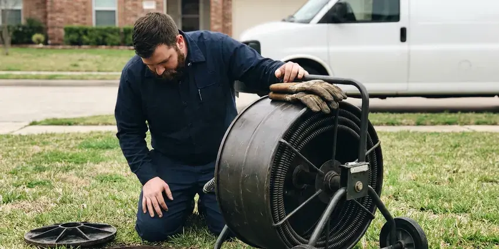

Basement Leak Repair in Saratoga Springs, UT
Water on the basement floor tells you something, not everything. BPK Plumbing tests first, then repairs what is really leaking.
- Same-Day Leak Detection
- Durable Repairs
- Skilled Foundation Care
- Moisture Meter and Camera Testing

Stop the Water and Protect Your Lower Level in Saratoga Springs, UT.
Testing comes first, so you only pay for the repair that fixes it.
Basement Leak Repair for Saratoga Springs, UT Homeowners
Water in a basement comes from the plumbing or from the ground, and condensation can look like either one. A meter test and a simple foil test tell them apart before we recommend anything. Each needs a different fix. A plumbing leak gets a pipe repair, groundwater needs drainage, and condensation needs a dehumidifier and insulated cold lines, so getting the diagnosis right decides what you spend.
Work we handle every week:
- Moisture meter and thermal camera leak detection
- Interior drain channels for groundwater pressure
- Floor drain and backwater valve repair

Additional Plumbing Maintenance Services in Saratoga Springs, UT
Our maintenance and specialty plumbing services in Saratoga Springs, UT protect your home year-round and extend the life of every system.


Customers
Why Choose BPK Plumbing for Basement Leak Repair in Saratoga Springs, UT?
Every basement call gets a moisture meter and a thermal camera, and a drain camera stays on the truck. Most leaks show up within the first hour. Without it, a plumber is guessing, and guessing usually means opening the wrong wall or replacing a sump pump that was never the problem in the first place.
- Lasting Repairs, Repairs are matched to Utah climate so the same leak does not return.
- Lasting Fixes, We fix the cause, like a bad fitting or poor grading, so the leak does not return.
- Local Knowledge, We know the soil and foundation types common around Saratoga Springs and where they tend to leak.
Citywide Coverage
Commercial lower levels around Saratoga Springs, such as shop storage rooms and office archives, get the same testing. Early or late visits are available. Roof drain leaders and grease lines often leak unnoticed for months, so we check them too.
Experienced Team
The people at BPK Plumbing who fix basement leaks are plumbers first. That matters when the source is a slab leak under the basement floor. We isolate and pressure test the line, then find the leak acoustically so we only open one small spot.
Safety-First Approach
Repairs meet the plumbing code adopted in Saratoga Springs and Utah. Drain repairs use approved transition couplings. Sump discharge lines get a check valve and terminate where local rules allow, and any backwater valve we install is a listed unit with an access cover so it can be cleaned.
Trusted Certified Saratoga Springs Plumbing Services Professionals
At BPK Plumbing, we are proud to offer certified plumbing services throughout Saratoga Springs, UT. Those papers on the wall mean something. Our plumbers hold recognized industry credentials, and they follow strict safety and quality rules on every repair, installation and maintenance call we run.
Call Us Now PHCC Plumbing Contractor Recognition
PHCC Plumbing Contractor Recognition Better Business Bureau (BBB) Accreditation
Better Business Bureau (BBB) Accreditation Angi Certified Pro
Angi Certified Pro ISO 9001 Quality Management Certification
ISO 9001 Quality Management CertificationReliable Basement Leak Repair in Saratoga Springs, UT
Clogged Drain Tile Repair in Saratoga Springs
Footing drains clog with silt and roots over the years, and once they stop flowing the water table at the wall rises. A camera run from the sump inlet shows us where the tile is plugged. A jetter usually opens it. Crushed clay tile has to be dug up and replaced with perforated PVC or corrugated pipe in a sock.

Interior Drainage Systems in Saratoga Springs
Where digging outside is not practical, an interior drain system does the same job from inside. A strip of slab comes out along the walls, perforated pipe goes in on stone, and it all drains to a sump. The wall gets a dimpled membrane. Seepage runs down behind it and into the pipe.
Waterproofing for Older Utah Homes in Saratoga Springs, UT
Older basements were often built with block walls and no exterior membrane. Homes from the 1980s and 1990s sometimes have polybutylene piping, which is prone to failure and a common reason to repipe. Water collects inside hollow block cores, and weep holes at the base let it drain into a perimeter channel. Clay tile drains fail too.
Supply Line Leak Repair in Saratoga Springs
Water lines along a basement ceiling can leak at fittings, valves or pinholes. Water softeners are a common fixture in Utah homes, and many newer houses are built with a softener loop already in place. Bad sections get cut out and replaced, and a run with repeated pinholes gets repiped rather than patched. Repiping a basement ceiling is usually a one-day job.
Water Heater and Appliance Leak Repair in Saratoga Springs, UT
Water heaters, softeners and washing machines often sit in basements, and their leaks pool on the floor out of sight. Once the tank itself leaks, it needs replacing. Leaks at the T&P valve, the drain valve or a supply connector can usually be fixed in one visit, and we add a drain pan or a leak sensor that shuts off the water automatically.
Water Damage Assessment in Saratoga Springs, UT
Before any repair, we figure out where the water came from and how far it spread. Moisture meters on drywall and baseboards show the wet area, and a thermal camera picks up cold spots where water is wicking behind the finish. Guessing costs money. We give you the readings and photos for your insurer.
Urgent Basement Leak Service in Saratoga Springs, UT
Basement leaks rarely wait for business hours. A water heater tank can split in the middle of the night. Our on-call plumbers carry repair couplings, shutoff valves and a wet vac, so the first visit usually ends with the leak stopped and the water back on in the rest of the house.

Sump Pump Installation & Repair in Saratoga Springs
A sump pump sits in a pit below the slab and kicks on when a float rises. Most failures come from a stuck float switch, a burned-out motor, or a check valve that lets the discharge water fall back into the pit and short-cycles the pump. We test yours with a bucket. Add a battery backup if storms knock out power.
Wet Basement Repair Near Me in Saratoga Springs, UT
Dispatch for basement calls in Saratoga Springs runs from our nearby shop, so most appointments land the same day or the next morning. A spraying pipe gets the next open truck. Slow seepage is easier to trace when it is actually wet, so we sometimes book those visits for a rainy day.
Searching for basement leak repair near me in Saratoga Springs usually happens with a wet floor in front of you. Close the main valve if water is spraying or rising. A local plumber can often be at your door the same day, trace the leak with a meter and a thermal camera, and stop it before it reaches carpet or drywall in the next room. Speed limits the damage.
BPK Plumbing at a Glance
- Fully licensed plumbing team covering Saratoga Springs, UT
- Same-day appointments and 24/7 emergency response
- Clear written estimates, no hidden fees
- 4.8-star rated by 470+ Utah customers
Saratoga Springs Map
Saratoga Springs Information
- Population
- 52,532
- Area codes
- Local
- Service area
- Saratoga Springs and towns within a 40 mile drive
- Nearby
- Eagle Mountain, Lehi, Draper, Herriman
Basement leak repair in Saratoga Springs, UT often traces back to a wall crack. Basements are common in Utah homes, which places water heaters, softeners and main drains below grade where slow leaks can go unnoticed. We fix the crack and the water pushing on it.
Talk to a Plumber
Call BPK Plumbing for reliable plumbing work done by licensed pros in Saratoga Springs, UT.
Our Specialized Plumbing Services in Saratoga Springs, UT
At BPK Plumbing, we handle the full list of plumbing services across Saratoga Springs, UT. From leak detection to full system installs, our team works fast and charges fair prices on homes and commercial properties alike. Here are the core services we offer:


Our Basement Leak Repair Process in Saratoga Springs, UT
We keep you informed from the first call to the final test.
Request a Quote
Call (385) 543-4073 and describe where you see water and when it appears. Same-day visits are common.
Trace the Source
Our technician uses moisture meters and pressure or dye tests to isolate the leak.
Repair and Verify
We make the repair, then retest under real use. You get a written summary.
Frequently Asked Questions About Basement Leak Repair in Saratoga Springs
Basement plumbing leak repairs in Saratoga Springs typically cost $200 to $1,500, depending on the pipe and how hard it is to reach. Pipe on an open ceiling is the cheap case. Pipe behind finished drywall or under the slab adds the cost of opening and patching, and a cast iron stack replacement can run higher than the range above if it goes through more than one floor.
Usually not, unless the leak is at an exposed fitting you can reach. A loose compression nut or a worn washer hose is fine to fix yourself. Anything involving soldering in a cramped ceiling, cutting cast iron, or tracing a leak behind finished walls is better left to a plumber with the right tools, because a wrong guess means extra holes in the drywall. Guessing gets expensive.
Yes, labor is covered by our workmanship warranty and parts by the manufacturer. Pumps typically carry several years. We register new pumps and water heaters for you and keep the model and serial numbers on file, so if one fails during its warranty you do not have to dig through boxes for paperwork.
Gutters and downspouts do most of the work. Keep them clear and extended well away from the foundation. Test the sump each spring and swap rubber washer hoses for braided ones every five years.
Shut off the main water valve first, then call us. Most homeowners here winterize sprinkler systems each fall and shut off outdoor spigots to keep lines from cracking. We cut out the split section, replace it with copper or PEX, and pressure test the line before turning the water back on to the rest of the house. Then we insulate the exposed run.
It depends on the scope. A small pipe or fitting repair generally does not. Replacing a drain stack, adding a sump discharge, installing a backwater valve or digging near the foundation may need one, and we check with the local building department and pull it before work starts so it does not hold up a sale later.
Some small leaks are fine to handle yourself, like tightening a washer hose or replacing a leaking supply connector. Basements are common in Utah homes, which places water heaters, softeners and main drains below grade where leaks can go unnoticed. Cracks and seepage tied to that kind of ground movement usually come back after a DIY patch, because surface sealers cannot hold back water pushing from the outside. Hydraulic cement buys time at best.
Workmanship on pipe repairs is warranted for the term on your invoice. Pumps come with the manufacturer's warranty. Seepage repairs carry terms that match the method, and if water returns at the same spot during the warranty period we come back, retest it, and fix it without charging for the labor.
Hear From Customers Who Hired Our Plumbing Experts

Jessica T.
We were adding a gas range in a kitchen remodel and needed a new line run from the meter. The plumber pulled the permit, ran the pipe through the crawl space, and had it inspected and approved within the week.
Gas Line Repair · South Jordan, UT
James P.
Our restaurant had a slow leak at the hand sink that was rotting the cabinet base. BPK Plumbing came in at six in the morning before prep, replaced the trap and both supply lines, and was packed up before my first cook clocked in.
Commercial Plumbing · South Jordan, UT
Carlos V.
Our house still had galvanized pipe, and upstairs the shower was a trickle. The crew repiped everything in PEX over three days and patched every drywall hole before they left. The pressure difference is night and day.
Repiping · Saratoga Springs, UT
Patricia H.
We had a slab leak that two other companies could not find. BPK Plumbing located it in under an hour with a listening device. They rerouted the line through the attic instead of breaking up the floor, so we kept our kitchen tile.
Slab Leak Repair · Herriman, UTDaniel K.
A pipe burst in the garage ceiling at 11 at night. Someone answered on the second ring, and the plumber was in my driveway about fifty minutes later. He shut off the main, cut out the split section, and had water back on before 2 am.
Emergency Plumbing · Eagle Mountain, UTKevin O.
Before buying our house I paid for a sewer camera inspection. BPK Plumbing found a belly in the line that held standing water about forty feet from the cleanout. We used the video to get the sellers to fix it before closing.
Sewer Camera Inspection · Draper, UT